CNN-CPP is a comprehensive framework written from scratch in C++ for building and training Convolutional Neural Networks (CNNs). Designed for flexibility and modularity, it provides an environment for creating deep learning models, with a focus on image processing and classification. Utilizing modern C++ features and libraries such as Eigen for Tensor operations and OpenCV for image handling, CNN-CPP aims to deliver a powerful toolset for deep learning applications.
Inspired by TensorFlow, CNN-CPP seeks to replicate its versatility and power within a C++ framework. It provides C++ users with similar capabilities to define, train, and deploy neural network models effectively.
| Goal | Status |
|---|---|
| Comprehensiveness: Provide a complete suite of tools and functionalities for handling the entire deep learning workflow, from data loading and augmentation to model evaluation and learning visualization. | ✅ |
| Flexibility: Allow users to easily define, train, and modify complex neural network architectures. | ✅ |
| Extensibility: Enable developers to extend the framework with custom layers, optimizers, and other components, facilitating research and experimentation. | ✅ |
| Cross-Platform Compatibility: Support multiple operating systems, including Linux, macOS, and Windows, through dockerization. | ✅ |
| Efficiency: Maximize performance and minimize training time through optimized C++ implementations. The framework is slower by two orders of magnitude compared to TensorFlow, meaning it is approximately 100 times slower in performing the same tasks. | ❌ |
| Higher Accuracy: Achieve better training and validation accuracy than TensorFlow by using 64-bit precision, while TensorFlow typically uses lower precision (16 and 32-bit). This goal was not planned initially but was successfully achieved. However, this does not apply when using Batch Normalization Layers as the implementations differ between the two frameworks. | ✅ |
- About the CNN-CPP
- Table of Contents
- Repository Structure
- Framework Components & Capabilities
- Neural Network
- Batch Manager
- Convolution Layer
- Max Pooling Layer
- Average Pooling Layer
- Activation Layer
- Flatten Layer
- Fully Connected Layer
- Batch Normalization Layer
- Loss Function
- Optimizer
- Tensor Operations
- Learning Decay
- ELRALES
- Gradient Clipping
- NNLogger
- Image Loader
- Image Container
- Image Augmentor
- Framework Structure
- Getting Started
- Using the Framework
- Doxygen Documentation
- Results
- LICENSE
CNN-CPP/
├── datasets/ # Versioned Datasets
├── external/ # External dependencies for the framework
│ ├── eigen/ # Eigen library for tensor operations
│ ├── googletest/ # GoogleTest for unit testing
│ └── opencv/ # OpenCV for image processing
├── include/ # Header files for the framework
│ ├── CNN/ # Definitions for Convolutional Neural Network
│ ├── Common/ # Common utilities and helper functions
│ ├── Image/ # Definitions for image processing
│ └── ThreadPool/ # Thread pool for parallel execution
├── logs/ # Placeholder directory for log files
├── plots/ # Placeholder directory for storing plots and graphs
├── src/ # Source files for the framework
│ ├── CNN/ # Source files for Convolutional Neural Network
│ ├── Common/ # Source files for common utilities
│ ├── Image/ # Source files for image processing
│ ├── ThreadPool/ # Source files for thread pool implementation
│ └── main.cpp # Main program file
├── tests/ # Unit tests for the framework
├── wmodels/ # Already created models, used in Results
├── .gitignore # Specifies untracked files to ignore
├── CMakeLists.txt # CMake configuration file
├── Dockerfile # Docker configuration for setting up the environment
├── install.sh # Script for installing the Linux dependencies
├── README.md # Framework overview and setup instructions
├── tasks.py # Script for automating common tasks
└── tools.py # Utilities and helper tools for tasks
The NeuralNetwork class is the central component for building, configuring, and training deep learning models. It provides various functionalities to manage the architecture, training process, and evaluation of neural networks.
-
Layer ManagementThe NeuralNetwork allows for the addition of different types of layers, including Convolutional Layers, Pooling Layers, Flatten Layers, Fully Connected Layers, Activation Layers, and Batch Normalization Layers. Each layer can be customized with parameters such as the number of filters, kernel size, stride, padding, pool size, number of neurons, activation functions, epsilon, momentum and initialization methods for weights, kernels and biases. -
Loss Function ConfigurationThe network supports the setting of different loss functions, including Mean Squared Error, Binary Cross-Entropy and Categorical Cross-Entropy which are essential for guiding the optimization process during training -
Optimizer ConfigurationThe NeuralNetwork allows for the selection and configuration of various optimizers, including SGD, Adam, RMSprop, and SGD with Momentum. Optimizer parameters can be customized according to the needs of the training process, or leave it to the Network to use default parameters for optimizers. -
Forward PropagationThe class provides functionality to perform a forward pass through the network, processing input data through each layer to produce predictions. -
Backward PropagationIt supports the backward pass through the network, calculating gradients and updating kernels, weights, biases, gamma and beta based on the computed loss, essential for training the model. -
Training ManagementThe NeuralNetwork supports training on a dataset with multiple epochs, managing batch sizes, learning rates, and the overall training loop. It also integrates with advanced features like gradient clipping and ELRALES. -
Evaluation and PredictionThe network can be evaluated on a "unseen" test dataset to determine its performance, providing metrics such as accuracy and loss. Additionally, the class supports making predictions on individual images or batches of images. -
Gradient ClippingThe NeuralNetwork includes support for gradient clipping, which prevents the exploding gradient problem by limiting the magnitude of gradients during backpropagation. -
ELRALES IntegrationThe class can enable ELRALES (Epoch Loss Recovery Adaptive Learning Early Stopping), a mechanism that adaptively adjusts the learning rate, restores the best model state, and implements early stopping based on the loss trends during training. -
Logging and Progress ReportingThe NeuralNetwork offers configurable logging levels to control the verbosity of output during training and evaluation. It also provides configurable progress reporting to track the training process. -
Learning Rate DecayThe network can be configured with learning rate decay, gradually reducing the learning rate during training to improve convergence. -
Compilation and ResettingThe class supports compiling the network, preparing it for training by setting up layers and optimizers. It also provides a hard reset function to reinitialize the network’s state, useful for reconfiguring the model.
The BatchManager class serves as the input layer to the neural network by managing the batching of images and labels. It facilitates efficient data feeding during training and testing by handling the following tasks:
-
Batch InitializationThe BatchManager initializes batches based on the input data, categorizing images and labels for training or testing. -
Data ShufflingIt implements dataset shuffling to ensure that the batches are randomized for each epoch, which helps in achieving better generalization in the model. -
Batch RetrievalThe class provides functionality to retrieve the next batch of images and labels for processing. This includes one-hot encoding of labels and maintaining batch balance across categories. -
Single Prediction SupportIt supports loading batches specifically for single prediction tasks, allowing for inference on individual images. -
Batch Indexing and BalancingThe manager keeps track of the current batch index and ensures that batches are processed according to the specified mode. In Uniform Distribution mode, batches are balanced in terms of category distribution. In Shuffle Only mode, images and labels are shuffled randomly without consideration for category balance. -
Batch SavingOptionally, batches can be saved to disk for debugging or analysis, with each batch organized by category. -
Support for Different Batch TypesThe BatchManager can handle different batch types, including training and testing batches, by selectively retrieving images and labels according to the batch type specified. -
Category ManagementIt manages category information, allowing retrieval of category names and ensuring that all operations are consistent with the dataset's categorical structure. -
Uniform Distribution ModeIn this mode, the BatchManager ensures that each category is equally represented within each batch. If a category does not have enough images to fill its portion of the batch, the remaining images are randomly sampled from the dataset. -
Shuffle Only ModeIn this mode, images and labels are shuffled randomly, without regard to category balance, and batches are filled purely based on the shuffled order of the dataset.
The ConvolutionLayer class implements a convolutional layer for neural networks, allowing the network to extract spatial features from input images. This layer supports several key functionalities:
-
Initialization:-
Number of filters -
Kernel size -
Stride -
Padding -
Kernel initialization:-
He -
Xavier -
Random Normal
-
-
Bias initialization:-
Zero -
Random Normal
-
-
-
Forward PassThe layer performs convolution operations on the input batch, computing feature maps using the specified kernels and biases. It uses multi-threading to parallelize the forward pass for improved performance.
-
Convolution
-
is the result of the convolution for filter at position . -
is the input depth (number of input channels). -
is the kernel size. -
represents the input patch. -
is the kernel weight for filter , depth , and position .
-
-
Adding Biases
-
is the final output value after adding bias. -
is the bias term added to the feature map for filter .
-
Backward PassThe backward method calculates gradients with respect to the kernels, biases, and input data, which are used for updating the layer's parameters. It supports parallel processing to efficiently compute gradients for the entire batch.
-
Gradient with Respect to Input:
-
is the gradient of the loss with respect to the input at depth , position . -
is the number of filters. -
is the gradient of the loss with respect to the output. -
is the kernel weight for filter , depth , and position .
-
-
Gradient with Respect to Kernels:
-
is the gradient of the loss with respect to the kernel at filter , depth , and position . -
and are the height and width of the output feature map. -
is the gradient of the loss with respect to the output.
-
-
Gradient with Respect to Bias:
-
is the gradient of the loss with respect to the bias for filter . -
is the gradient of the loss with respect to the output.
-
Padding and ConvolutionThe layer handles padding of input images, ensuring correct spatial dimensions for output feature maps. The convolve method performs the element-wise multiplication of the input and kernel tensors over the receptive field, returning the convolution result.
-
Padding:
-
This is the output tensor after padding is applied. -
: The amount of padding added to each side of the input tensor. -
: The original input tensor before padding. -
: Indices of the original input tensor.
-
-
Convolve:
-
: This is the result of the convolution operation. -
: The height of the kernel matrix. -
: The width of the kernel matrix. -
: The input tensor being convolved. -
: The kernel or filter applied to the input. -
: The starting positions in the input tensor from where the kernel is applied.
-
-
Output Height and Width Calculation: -
Optimizer RequirementThis layer requires an optimizer to update weights (kernels) and biases during training, as it contains trainable parameters. -
Thread PoolIt utilizes thread pools for both forward and backward passes, distributing computation across available CPU cores (hardware threads) to optimize processing speed. -
Parameter ManagementThe class provides methods for setting and retrieving kernels and biases, allowing external manipulation and inspection. It ensures that these parameters can be loaded during training (ELRALES). -
Error HandlingIt provides error detection mechanism:- Throws exception if filters, kernel size, stride, or padding are invalid during initialization.
- Validates output dimensions during the forward pass, ensuring they are positive.
- Ensures padding values are non-negative and appropriately sized.
- Logs errors when setting kernels and biases if dimensions mismatch.
- Checks for dimension mismatches in setKernels and setBiases, throwing exceptions if necessary.
The MaxPoolingLayer class implements a max pooling layer for neural networks, which reduces the spatial dimensions of the input while retaining the most important features. This class is crucial for down-sampling input feature maps, leading to a more efficient and less complex network.
-
Initialization:Pool SizeStride
-
Forward PassThe forward method applies the max pooling operation on each input batch, extracting the maximum value from each pooling window to form the output feature maps. It also stores the indices of these maximum values for use during backpropagation.-
: Indices of the output feature map. -
: Iterators over the pooling window, each ranging from to . -
: The stride of the pooling operation.
-
-
Backward PassDuring backpropagation, the backward method uses the stored indices to propagate gradients back to the input layer. It ensures that only the positions corresponding to the maximum values from the forward pass receive non-zero gradients, which helps in updating weights (kernels) effectively.-
: The gradient of the loss with respect to the output at position . -
: Routed only to those indices that correspond to the maximum values used in the forward pass, and all other gradients are set to zero.
-
-
Index ManagementThe class maintains indices of maximum values for each pooling window in each input image, facilitating accurate gradient propagation during the backward pass. -
Output Height and Width Calculation -
Error HandlingIt checks for invalid pooling configurations by ensuring that the calculated output dimensions are positive. If not, it throws an exception indicating potentially incompatible pool size or stride settings.
The AveragePoolingLayer class implements an average pooling layer for neural networks, which reduces the spatial dimensions of input feature maps by computing the average of elements within a defined pooling window. This process helps to down-sample the input, reducing the number of parameters and computations in the network, while maintaining essential spatial information.
-
Initialization: -
Pool Size -
Stride -
Forward PassThe forward method applies the average pooling operation to each input batch, calculating the average of the values in each pooling window and forming the output feature maps. This method is essential for down-sampling and reducing the spatial dimensions of the input data while preserving important feature information.-
: Indices of the output feature map. -
: Iterators over the pooling window, each ranging from to . -
: The stride of the pooling operation.
-
-
Backward PassDuring backpropagation, the backward method computes the gradients for the input data. The gradient from the output is evenly distributed across the positions within the corresponding pooling window, enabling proper weight updates during training.-
: The gradient of the loss with respect to the output at position . -
: Pool Size is the total number of elements in the pooling window.
-
-
Output Height and Width Calculation -
Error HandlingThe layer checks for valid configurations by ensuring that the calculated output dimensions are positive. It will throw an exception if invalid pooling size or stride values result in negative output dimensions.
The ActivationLayer class implements various activation functions used in neural networks to introduce non-linearity into the model. This class offers flexibility by supporting multiple activation types and their respective derivatives, which are essential for both the forward and backward passes of the network. The key features of this class are:
-
Supported Activation Types:-
ReLU -
Leaky ReLU -
ELU -
Sigmoid -
Softmax -
TanH
-
-
Forward PassThe forward method applies the chosen activation function to each element of the input tensor, allowing for both 2D and 4D input structures by wrapping and unwrapping tensors as needed. -
Backward PassComputes the derivative of the activation function for the backward propagation step, which is crucial for updating network parameters during training. -
Error HandlingThe class checks for unsupported activation types and throws exceptions if such a type is encountered.
The FlattenLayer class is designed to transform multi-dimensional input tensors into flat vectors, making it essential for connecting convolutional layers to fully connected layers in a neural network. Here are its key functionalities:
-
Forward PassThe Flatten Layer reshapes the input tensor from (batch_size, depth, height, width) to a 2D tensor with shape (batch_size, flattened_size), where flattened_size is the product of depth, height, and width. The output is returned as a 4D tensor with shape (batch_size, 1, 1, flattened_size).-
: The output tensor after flattening. -
: The input tensor with shape where is the batch size, is the number of channels, is the height, and is the width. -
: The operation used to flatten the input tensor into the desired output shape. -
This formula represents the flattening operation performed in the Flatten Layer. The input tensor is reshaped from a 4D tensor to a flattened 2D tensor and then reshaped back to a 4D tensor with the flattened size in the last dimension.
-
-
Backward PassIt reshapes the gradient from the output tensor back to the original shape of the input tensor, allowing gradients to propagate correctly through the network.-
: The gradient with respect to the input, reshaped back to its original dimensions. -
: The gradient of the loss with respect to the output of the Flatten Layer, typically a 4D tensor with shape . -
: The operation used to convert the flattened gradient back to the original input shape.
-
This formula represents the backward pass in the Flatten Layer. The gradient
-
Shape ManagementThe layer tracks the original dimensions of the input tensor to ensure accurate reshaping during both the forward and backward passes. -
Error HandlingThe layer checks for consistency in reshaping operations and will throw an exception if there is a mismatch in dimensions during the backward pass.
The FullyConnectedLayer class represents a dense layer in a neural network, where each neuron is connected to every neuron in the previous layer or input from flatten layer. It is responsible for learning linear combinations of the input features, which are then used for predictions or further transformations.
-
Initialization:-
Weights:-
He -
Xavier -
Random Normal
-
-
Biases:-
Zero -
Random Normal
-
-
-
Forward PassThe forward method takes an input batch of 4D tensors, flattens it to a 2D tensor, and performs matrix multiplication with the weights, followed by the addition of biases. The result is reshaped back into a 4D tensor with the shape (batch_size, 1, 1, output_size).
-
Matrix Multiplication:
-
: is the batch index. -
: is the output neuron index. -
: is the input feature index. -
: the value of the input feature for the batch . -
: the weight associated with the connection between input feature and output neuron . -
: the resulting output for neuron in batch .
-
-
Adding Bias:
-
: is the batch index. -
: is the output neuron index. -
: the computed output before adding the bias. -
: the bias for the output neuron .
-
Backward PassDuring the backward pass, the layer calculates the gradients of the loss with respect to its weights, biases, and inputs. These gradients are used to update the parameters using the optimizer.
-
Gradient with respect to weights:
-
: is the batch index. -
: is the output neuron index. -
: is the input feature index. -
: is the gradient of the weight connecting input feature to output neuron . -
: the value of the input feature for the batch . -
: The partial derivative of the loss function with respect to the output of the neuron at index for the -th example in the batch.
-
-
Gradient with respect to biases:
-
: is the batch index. -
: is the output neuron index. -
: the value of the input feature for the batch . -
: The partial derivative of the loss function with respect to the output of the neuron at index for the -th example in the batch. -
: is the gradient of the bias for output neuron .
-
-
Gradient with respect to inputs:
-
: is the batch index. -
: is the output neuron index. -
: is the input feature index. -
: partial derivative of the loss function with respect to the input value at index for the -th example in the batch. This gradient is propagated to the previous layer. -
: The partial derivative of the loss function with respect to the output of the neuron at index for the -th example in the batch. -
: weight connecting input feature to output neuron .
-
-
Optimizer RequirementThis layer requires an optimizer to update weights and biases during training, as it contains trainable parameters. -
Parameter ManagementThe class provides methods for setting and retrieving weights and biases, allowing external manipulation and inspection. It ensures that these parameters can be loaded during training (ELRALES). -
Error HandlingThe layer validates input and output dimensions during both forward and backward passes, throwing exceptions for any inconsistencies in the expected and actual dimensions. It ensures that both input and output sizes are positive integers, maintaining the integrity of the network configuration.
The BatchNormalizationLayer class implements batch normalization for neural networks, a technique used to stabilize and accelerate training by normalizing the input of each layer. This layer helps improve the convergence rate and overall performance of the network by maintaining mean and variance at stable levels. It sets up internal tensors for scaling (gamma) and shifting (beta), as well as moving averages of mean and variance.
-
Initialization-
Epsilon: A small constant added to the variance to prevent division by zero. -
Momentum: A factor used to update the moving averages of mean and variance during training.
-
-
Forward PassThe forward method computes the mean and variance for the current batch, normalizes the input data, and scales and shifts it using gamma and beta. It also updates the moving averages of mean and variance using the specified momentum.-
Convolutional Layers-
: The mean ( ) is computed as the average of the input values over the batch, height, and width. This step centers the input data.
-
: The variance ( ) is calculated as the average of the squared differences between each input value and the mean. It measures how much the inputs vary from the mean.
-
: The normalized input ( ) is derived by subtracting the mean from each input and dividing by the square root of the variance plus a small constant . This ensures the inputs have a mean of 0 and a variance of 1.
-
: The final output ( ) is obtained by scaling the normalized input with and then shifting it with . These parameters allow the model to adjust the normalized data to any desired scale and shift.
-
-
Dense Layers-
: The mean ( ) is computed as the average of the input values over the batch. This step centers the input data.
-
: The variance ( ) is calculated as the average of the squared differences between each input value and the mean. It measures how much the inputs vary from the mean.
-
: The normalized input ( ) is derived by subtracting the mean from each input and dividing by the square root of the variance plus a small constant . This ensures the inputs have a mean of 0 and a variance of 1.
-
: The final output ( ) is obtained by scaling the normalized input with and then shifting it with . These parameters allow the model to adjust the normalized data to any desired scale and shift.
-
-
-
Backward PassDuring backpropagation, the backward method computes gradients with respect to the input data, as well as the gamma and beta parameters. These gradients are used to update the parameters directly.-
Convolutional Layers-
: The gradient with respect to for the -th channel is calculated by summing the product of the output gradient and the normalized input across the batch, height, and width.
-
: The gradient with respect to for the -th channel is calculated by summing the output gradients across the batch, height, and width.
-
: The gradient with respect to the variance considers how changes in the variance affect the loss. This involves the sum of the product of the loss gradients, the difference between the input and the mean, and a factor dependent on the variance.
-
: The gradient with respect to the mean is the sum of two components: the first part considers the direct impact of the mean on the loss, while the second part accounts for the influence of the variance on the mean.
-
: The gradient with respect to the input is the sum of three terms: the first term scales the gradient by the inverse standard deviation, the second term accounts for the contribution of the variance, and the third term adjusts based on the mean.
-
and updates: The gradients with respect to gamma and beta are used to update the parameters as shown above.
-
-
Dense Layers-
: The gradient with respect to for the -th feature is calculated by summing the product of the output gradient and the normalized input across the batch.
-
: The gradient with respect to for the -th feature is calculated by summing the output gradients across the batch.
-
: The gradient with respect to the variance considers how changes in the variance affect the loss. This involves the sum of the product of the loss gradients, the difference between the input and the mean, and a factor dependent on the variance.
-
: The gradient with respect to the mean is the sum of two components: the first part considers the direct impact of the mean on the loss, while the second part accounts for the influence of the variance on the mean.
-
: The gradient with respect to the input is the sum of three terms: the first term scales the gradient by the inverse standard deviation, the second term accounts for the contribution of the variance, and the third term adjusts based on the mean.
-
and updates: The gradients with respect to gamma and beta are used to update the parameters as shown above.
-
-
-
Parameter Management: The class provides methods for setting and retrieving gamma and beta, allowing external manipulation and inspection. It ensures that these parameters can be saved and loaded during inference and during training (ELRALES). -
Tensor Dimension Support: This layer supports both 2D and 4D tensors, allowing it to be seamlessly integrated after convolutional layers, fully connected layers, or any other layer in the network where needed. -
Error Handling: The layer includes checks to ensure that the initialization state is set correctly before performing forward or backward passes, preventing errors due to uninitialized parameters.
The LossFunction class and its derived classes implement various loss functions used in neural networks to measure the difference between predicted outputs and true targets. The key functionalities of each class are as follows:
-
Binary Cross Entropy LossThis loss function is used for binary classification tasks. It computes the loss using the binary cross-entropy formula and applies clipping to the predictions for numerical stability. The derivative method calculates the gradient of the loss with respect to the predictions.-
: The Binary Cross Entropy loss function measures the difference between the predicted probability ( ) and the actual binary target ( ) over a batch of size . The loss is averaged over all examples in the batch. -
: This represents the predicted probability for the -th example in the batch, clipped to avoid taking the log of zero. It is given by the network's output. -
: This is the actual binary target (either 0 or 1) for the -th example in the batch. -
: The derivative of the loss function with respect to the network's output for the -th example. It represents how much the loss would change with a small change in the network's output, guiding the backpropagation process to update the model's parameters accordingly.
-
-
Mean Squared Error LossUsed for regression tasks, this loss function computes the average squared difference between predictions and targets. The derivative method calculates the gradient of the loss with respect to the predictions.-
: The Mean Squared Error (MSE) loss function calculates the average squared difference between the predicted values ( ) and the actual target values ( ) over a batch of size . -
: This represents the predicted value for the -th example in the batch. -
: This is the actual target value for the -th example in the batch. -
: The derivative of the loss function with respect to the network's output for the -th example. It indicates how much the loss would change with a small change in the network's output, guiding the backpropagation process to update the model's parameters.
-
-
Categorical Cross Entropy LossThis loss function is used for multi-class classification tasks with one-hot encoded targets. It calculates the loss using the categorical cross-entropy formula, summing the loss for each class where the target is 1. The derivative method calculates the gradient with respect to the predictions, assuming one-hot encoded targets.-
: The Categorical Cross Entropy loss function measures the difference between the predicted probability distribution ( ) and the actual one-hot encoded target distribution ( ) over a batch of size with classes. -
: This represents the predicted probability for the -th class of the -th example in the batch, clipped to avoid taking the log of zero. -
: This is the actual target probability for the -th class of the -th example in the batch. In one-hot encoding, this will be 1 for the correct class and 0 for all others. -
: The derivative of the loss function with respect to the predicted probability for the -th class of the -th example. It represents the difference between the predicted probability and the actual target, guiding the backpropagation process.
-
-
Factory MethodThe LossFunction class includes a factory method, create, which instantiates a specific loss function object based on the provided LossType. This allows for flexibility in choosing the appropriate loss function during model creation.
The Optimizer class and its derived classes implement various optimization algorithms used in training neural networks to minimize the loss function and update the model parameters efficiently. The key functionalities of each class are as follows:
-
SGD(Stochastic Gradient Descent) This optimizer updates weights and biases by applying a simple learning rate-scaled gradient descent step. It uses the applyUpdates method from the TensorOperations class to adjust the parameters directly with gradients.-
: The weights of the model that are being updated. -
: The gradient of the loss with respect to the weights, calculated during backpropagation. -
: The learning rate, a hyperparameter that controls the size of the update step. -
: The biases of the model that are being updated. -
: The gradient of the loss with respect to the biases, calculated during backpropagation.
-
-
SGD with MomentumThis optimizer extends SGD by adding a momentum term that helps to accelerate the optimization process in the relevant direction and dampen oscillations. It maintains velocity terms (v_weights and v_biases) for weights and biases, which are updated iteratively and used to adjust the model parameters.-
: The velocity term for the weights, which accumulates the past gradients scaled by the momentum factor . -
: The velocity term for the biases, similar to , but for biases. -
: The momentum coefficient, which controls the influence of the past gradients on the current update. -
: The learning rate, which scales the contribution of the current gradient to the update. -
: The weights of the model that are being updated. -
: The gradient of the loss with respect to the weights, calculated during backpropagation. -
: The biases of the model that are being updated. -
: The gradient of the loss with respect to the biases, calculated during backpropagation.
-
-
Adam(Adaptive Moment Estimation) This optimizer combines the advantages of both the AdaGrad and RMSProp algorithms, maintaining adaptive learning rates for each parameter by computing first (mean) and second (variance) moments of the gradients. It employs bias-correction terms to ensure unbiased estimates of these moments. Adam maintains separate moving averages of gradients (m_weights, m_biases) and squared gradients (v_weights, v_biases) for both weights and biases.-
: The first moment estimate (mean of the gradients) for the weights, which accumulates the gradients with an exponential decay rate . -
: The second moment estimate (uncentered variance of the gradients) for the weights, which accumulates the squared gradients with an exponential decay rate . -
: The bias-corrected first moment estimate for the weights, which adjusts to account for the initialization bias. -
: The bias-corrected second moment estimate for the weights, which adjusts to account for the initialization bias. -
: The weights of the model that are being updated. -
: The gradient of the loss with respect to the weights, calculated during backpropagation. -
: The first moment estimate for the biases. -
: The second moment estimate for the biases. -
: The bias-corrected first moment estimate for the biases. -
: The bias-corrected second moment estimate for the biases. -
: The biases of the model that are being updated. -
: The gradient of the loss with respect to the biases, calculated during backpropagation. -
: Exponential decay rates for the moment estimates. -
: The learning rate, which scales the update. -
: A small constant added for numerical stability, preventing division by zero. -
: The time step or iteration count, which helps in correcting the bias in the moment estimates.
-
-
RMSprop(Root Mean Squared Propagation) This optimizer maintains an exponentially decaying average of past squared gradients to divide the gradient element-wise, which helps in dealing with the vanishing learning rate problem. It updates the weights and biases based on the root mean square of gradients.-
: The running average of the squared gradients for the weights, updated using the exponential decay rate . -
: The running average of the squared gradients for the biases, similar to , but for biases. -
: The decay rate that controls the averaging of the squared gradients. It determines how much past gradients influence the current average. -
: The learning rate, which scales the update step for weights and biases. -
: The weights of the model that are being updated. -
: The gradient of the loss with respect to the weights, calculated during backpropagation. -
: The biases of the model that are being updated. -
: The gradient of the loss with respect to the biases, calculated during backpropagation. -
: A small constant added for numerical stability to prevent division by zero in the denominator.
-
-
Factory MethodThe Optimizer class includes a factory method, create, which instantiates a specific optimizer object based on the provided OptimizerType and parameters. This allows for flexibility in choosing the appropriate optimizer during model training.
-
Optimizer IntegrationThe TensorOperations class is designed to support the weight and bias updates used by optimizers like Adam, RMSProp, SGD, and SGD with Momentum. It ensures seamless integration of these optimizers by handling tensor updates efficiently. -
Flexible Dimension SupportThe class provides functions to apply updates to tensors of various dimensions, including 1D (for biases), 2D (for Fully Connected Layers), and 4D (for Convolutional Layers). This flexibility allows the class to cater to different layer types within the neural network. -
Update ScalingEach update operation applies a scaling factor to the updates, enabling precise control over the magnitude of weight and bias adjustments during training.
The LearningDecay class implements various learning rate decay strategies used to adjust the learning rate during
training, improving convergence for neural network models. The class allows different decay methods to be applied based
on the specified LearningDecayType and associated parameters:
-
Decay Type InitializationThe constructor accepts a LearningDecayType and a map of parameters, setting default values if specific parameters are not provided. This ensures the decay method can operate with sensible defaults. -
Exponential DecayReduces the learning rate exponentially based on a specified decay rate. The learning rate decreases continuously over epochs, following the formula: -
Step DecayReduces the learning rate at fixed intervals or "steps" by a decay factor. The learning rate is adjusted using the formula: -
Polynomial DecayReduces the learning rate following a polynomial function of the epoch, reaching a specified endLearningRate after a certain number of decaySteps. The formula used is: -
Inverse Time DecayApplies decay so that the learning rate decreases proportionally to the inverse of time, using the formula: -
Cosine DecayApplies a cosine decay function to reduce the learning rate, smoothly decreasing the learning rate and then increasing it slightly at the end. The formula used is: -
NoneIf no decay is specified, the learning rate remains constant throughout the training process.Note:
By default,Learning Decayis disabled. It can be enabled with a single line of code, example:wmodels/cnn_cd_ld_e25.Note:
Enabling Learning Decay is mutually exclusive with enabling ELRALES.
Only one mechanism can be activated during training.
Exceptions are thrown during compiling the model if this is not respected.
The ELRALES mechanism, which stands for Epoch Loss Recovery Adaptive Learning Early Stopping, is a sophisticated
technique designed to enhance the training process of neural networks. It combines the concepts of adaptive learning
rate adjustment, early stopping, and recovery mechanisms to ensure efficient and effective model training. ELRALES
operates by closely monitoring the loss during training epochs. It introduces a strategy that not only adjusts the
learning rate based on the training progress but also includes mechanisms to save model state, recover from bad epochs
and halt training if no significant improvement is observed. The key idea is to avoid overfitting, encourage faster
convergence, and ensure that the model achieves optimal performance without unnecessary training. The process can be
broken down into the following steps:
-
Initialization:-
Learning Rate Coefficient
This parameter determines the factor by which the learning rate is reduced when the model fails to improve. Current learning rate is multiplied by this coefficient. Coefficient must be set between [0,1], otherwise framework will purposefully throw runtime error. -
Maximum Successive Epoch Failures
This parameter defines the number of consecutive epochs that are allowed to fail (i.e., have a loss higher than the previous best) without breaking the tolerance before the ELRALES proclaims early stopping. Once model makes better training loss than the previous best, counting is reseted. -
Maximum Total Epoch Failures
This parameter sets the maximum number of epoch failures permitted throughout the entire training process. If the total number of failures exceeds this value, the training is stopped. This ensures that the model does not waste time training when it's not making meaningful progress. -
Tolerance
The tolerance parameter allows some flexibility by defining an acceptable range within which the loss can increase without being considered a failure. A tolerance of 0.0 means that any increase in loss is unacceptable, while a small positive tolerance allows minor increases without triggering recovery mechanisms. Tolerance value must be set between [0,1] representing the difference in percentage of best loss and current loss.
-
-
Monitoring Epoch Loss- During training, the loss for each epoch is evaluated against the best loss observed so far.
- If a new lower loss is achieved, it becomes the new best loss, and the model’s state is saved. This includes saving the kernels and biases from Convolutional Layers, the weights and biases from Dense Layers, the gamma and beta parameters from Batch Normalization Layers, as well as the associated optimizer parameters.
- This will allow model to recover to this epoch if ELRALES makes decision to do so.
-
Adaptive Learning and Recovery- If the current epoch's loss fails to improve or deteriorates slightly (within the tolerance range), the number of successive and total epoch failures is incremented.
- The learning rate is reduced by a factor specified by the Learning Rate Coefficient if the model breaks the tolerance, triggering a recovery mechanism that restores the model to its best state.
- If the model continues to fail (exceeding the maximum allowed failures),
ELRALEShalts the training process (early stopping).
-
Early Stopping- When the total number of epoch failures exceeds the predefined limit, training is stopped to prevent overfitting and wasted computation. This ensures that the model does not continue to train when there is little to no benefit.
Note:
By default,ELRALESis disabled. It can be enabled with a single line of code, example:wmodels/cnn_cd_elrales_e25.Note:
Enabling ELRALES is mutually exclusive with enabling Learning Decay.
Only one mechanism can be activated during training.
Exceptions are thrown during compiling the model if this is not respected.
The GradientClipping class is a utility that ensures the stability of the training process by limiting the magnitude
of gradients. This helps prevent the exploding gradient problem during backpropagation, especially in deep neural
networks.
-
Gradient ClippingThe class provides functionality to clip the gradients of tensors to a specified range. This is done by constraining each element in the gradient tensor to lie within the range [-clip_value, clip_value]. -
Support for Multiple DimensionsThe GradientClipping class supports both 4D tensors (commonly used in Convolutional Layers) and 2D tensors (used in Fully Connected Layers), ensuring flexibility across different types of layers in the neural network. -
Training StabilityBy clipping gradients, this class helps to maintain training stability and ensures that the model can continue learning without being disrupted by large gradient values.Note:
By default,Gradient Clippingis disabled. It can be enabled with a single line of code, example:wmodels/cnn_example.
The NNLogger class provides various logging functionalities for tracking and analyzing the neural network’s
performance during training and evaluation. It offers detailed output options for tensor data, progress reporting, and
CSV logging to help in debugging and understanding the network's behavior.
-
Full Tensor PrintingThe NNLogger can print the entire contents of 2D and 4D tensors for each layer during forward and backward passes, clearly labeled with the layer name and propagation type. However, as the saying goes, “With great power comes great responsibility”—printing full tensors is not recommended unless absolutely necessary. Use it wisely, or be prepared for an ocean of numbers! -
Tensor Summary StatisticsThe class provides summary statistics for tensor data on a per-layer per-propagation basis, including mean, standard deviation, minimum and maximum values, the percentage of zeros, and the count of positive and negative values. This offers a more concise and practical alternative to printing full tensors. -
Training Progress ReportingThe NNLogger tracks and displays training progress, including the completion percentage for the current epoch and overall training, elapsed training time, estimated time remaining (ETA), and average loss. This comprehensive progress report helps monitor the training process effectively. -
CSV LoggingThe class allows the initialization and updating of CSV files to record training and testing metrics such as accuracy, loss, and ELRALES state machine (if used). This data can be used for further analysis or visualization.
The ImageLoader class handles the loading of images from a dataset directory into an ImageContainer. It processes
images for training, testing, and single prediction purposes.
-
Directory Image LoadingThe ImageLoader loads images from specified directories, categorizing them based on their folder structure into training, testing, and single prediction sets. It supports common image formats such as .jpg and .png. -
Category and Label ManagementThe class maps images to categories and labels as defined by the directory structure, ensuring that the ImageContainer is organized according to the dataset's layout. -
Loading Progress ReportingThe class optionally reports loading progress, showing the percentage of images loaded as a visual indicator of progress. -
Error HandlingThe class includes error handling mechanisms to manage issues such as unreadable images, ensuring robustness during the image loading process.
The ImageContainer class manages the storage and organization of images and labels for training, testing, and single
prediction tasks within a neural network.
-
Image and Label ManagementThe ImageContainer class stores images and their associated labels, categorizing them into training, testing, and single prediction sets based on the provided label. It supports adding images, retrieving images by category, and managing label mappings. -
Single Prediction SupportThe class allows for the addition and retrieval of images intended for single predictions, organizing them by image name for easy access. -
Label MappingIt supports label mapping functionality, enabling the assignment of mapped labels to the original labels, which can be retrieved as needed. -
Category-Specific RetrievalThe class provides methods to retrieve training and test images by specific categories, facilitating operations on subsets of the dataset. -
Unique Labels ManagementThe class supports the storage and retrieval of unique labels within the dataset, aiding in tasks that require knowledge of all possible categories.
The ImageAugmentor class is designed to apply a variety of image augmentation techniques to datasets, enhancing the
diversity and generalization of the training data. Additionally, it handles image normalization and resizing, ensuring
consistency across the dataset.
-
Image Resizing and NormalizationThe ImageAugmentor ensures that each image is resized to the target dimensions and normalized to a specified scale. These operations are performed only once per image, regardless of how many times the augmentation process is invoked. -
Zoom AugmentationThis class allows the application of random zoom transformations on images. The zoom factor and the probability (chance) of zooming can be configured, allowing control over how often this augmentation is applied. -
Flipping AugmentationThe class supports both horizontal and vertical flipping of images. Each type of flip can be enabled or disabled, and the probability of flipping can be configured, making it possible to determine how frequently flipping occurs during augmentation. -
Shearing AugmentationImages can undergo shear transformations to introduce slanting effects. The shear range and the probability of shearing can be adjusted, providing control over how often and how much shearing is applied. -
Gaussian Noise AugmentationThe ImageAugmentor can add Gaussian noise to images, simulating natural variations in image quality. Both the intensity of the noise (standard deviation) and the probability of noise being added can be configured to simulate different noise levels. -
Gaussian Blur AugmentationThe class allows for the application of Gaussian blur to images, which can simulate different focus levels. The strength of the blur (kernel size) and the probability of applying the blur are adjustable, enabling selective application of this effect. -
Testing & Single Prediction Image SupportThe ImageAugmentor can also apply augmentation operations to images designated for testing or single predictions, depending on configuration ensuring consistency in preprocessing across different types of images.
Begin by cloning the CNN-CPP Framework repository to your local machine. Use the following command in your terminal:
git clone https://github.com/kolemare/CNN-CPP.gitFor Linux users preferring a native setup without Docker, install the necessary dependencies with provided install.sh script.
sudo ./install.shThis script will install all required software on your Linux machine. This ensures that all necessary components are properly set up for your development environment.
Linux docker setup: Docker Desktop for Linux installation guide.
Windows docker setup:
Docker Desktop for Windows installation guide.
Mac OS docker setup: Docker Desktop for Mac installation guide.
Note:
Using a virtual machine is not recommended for optimal performance. However, if you decide to use a Linux virtual machine, ensure the following configurations:
- CPU Allocation: Allow the virtual machine to use all available CPU cores.
- RAM Allocation: Allocate at least 4 GB of RAM. More memory may be required depending on the model and dataset used.
These settings are important to minimize performance issues during resource-intensive tasks.
Linux: Before running Docker commands, make sure that your user belongs to the docker group to avoid using sudo with every Docker command. If not already configured, you can add your user to the docker group with:
sudo usermod -aG docker $USERWindows: Ensure that the Docker Desktop application is running before executing any Docker commands.
Mac OS: Docker on Mac behaves similarly to Linux. You do not need to start a separate Docker service as with Windows.
First, ensure you are positioned at the root of the repository. The Docker image needs to be built only once. To build the Docker image, use the following command:
docker build -t cnn-cpp-image .To start the Docker container in interactive mode while mounting the repository directory, use:
docker run -it -v .:/CNN_CPP cnn-cpp-imageThis command starts the Docker container in interactive mode and mounts the entire repository. This setup ensures that any changes made within the Docker container are immediately visible on the host operating system, and vice versa. To stop the running Docker container, you can use CTRL+C. Note that if the container is stopped, you will need to rerun the command to start it again.
After you are done working, you can remove the Docker container to free up resources. Use the following commands to find the container ID and remove it:
docker images # Lists all containers, find the one you want to removedocker rm [container_id] # Replace [container_id] with your actual container IDOnce the Docker image is removed, you will need to rebuild it if you wish to use Docker again for the CNN-CPP Framework.
Building the Docker image is a one-time requirement unless it is deleted.
This ensures that all necessary components are properly set up for your development environment.
Size of Docker image for CNN-CPP is approximately: 8.74GB
Once docker container is started in interactive mode or native Linux setup is done, you can proceed to python invokes.
-
invoke extractThe extract task extracts all .zip files in the datasets folder, including handling split .zip files.Note:
Some datasets are already available in the datasets folder. -
invoke buildThe build task compiles the framework.-
--jobs: Specifies the number of jobs to run simultaneously during the build.
Note:
By default, the build process uses a single job. However, using 4 jobs (invoke build --jobs 4) is recommended for faster compilation. -
--clean: Cleans the build directories before compiling.
Note:
First compilation might take a while, since it builds OpenCV first.
-
-
invoke runThe run task executes the compiled framework located in the build directory. -
invoke cleanThe clean task removes generated files and directories.-
--build: Cleans build directories (removes compiled files and binaries).
-
--datasets: Cleans the datasets folder, keeping only .zip files.
-
--all: Performs a full cleanup, combining build and datasets.
Note: By default, all clean invocations will remove unversioned .txt, .png, .csv files, as well as Doxygen directories and IDE-specific files.
-
-
invoke installThe install task installs the dependencies by running the install.sh script (no need for this when using docker, or in case install.sh is already run with native Linux setup). Script is idempotent so multiple runs won't cause harm. -
invoke testThe test task executes all GoogleTest unit tests. -
invoke plotThe plot task parses a CSV file and generates plots for training and testing metrics.-
--csv: Specifies the path to the CSV file (default is logs/cnn.csv). This is also the default location of Neural Network csv output. So if not specified during model creation skip this flag.
-
--output_dir: Specifies the directory where plots will be saved (default is plots).
Note:
To summarize invoke plot => If no relative path to the output csv is specified during model creation just use invoke plot without arguments. Best time to use this is when model finishes learning, although it can be invoked in separate terminal after epochs or during epochs, if early plots are necessary.
-
-
invoke doxygenGenerates the framework's documentation and compiles it into a PDF.
Instead of providing a detailed step-by-step guide on how to create a model from scratch, this framework offers a
collection of 10 pre-built models located in the wmodels directory. Among these, the model named cnn_example
serves as a comprehensive guide, containing annotated steps that illustrate the process of building a model using this
framework.
This approach allows you to explore practical examples directly, making it easier to understand the intricacies of model creation. For those looking to see these models in action, some of them are utilized in the Results section. Feel free to train them yourself or experiment with new models.
Also not to forget, you can rewrite existing models with your own desired architecture, or even create a new .hpp file containing a new model in wmodels. If new .hpp model is created, just include it in main.cpp and call the newly created function in main, commenting calls to other model functions.
To work seamlessly with this framework, datasets must follow a specific directory structure. This structure ensures that the framework can automatically detect categories and handle one-hot encoding internally, simplifying the setup process.
-
Dataset Directory StructureThe dataset directory must contain the following three folders:- training_set
- test_set
- single_predictions
-
Training and Test SetsWithin both training_set and test_set, there should be subfolders named after specific categories (e.g. car, boat, plane). Each subfolder contains images representing that category. The names of the images are irrelevant, the structure ensures correct categorization. -
Single PredictionsThe single_predictions folder holds images for single prediction tasks. As with the other sets, image names are not important only the content and directory structure matter. -
Automatic Category Detection and EncodingBy following this structure, the model automatically detects categories and performs one-hot encoding under the hood, eliminating the need for manual preprocessing.
Note:
Already existing datasets in thedatasetsfolder can be used as examples after extraction.
CNN-CPP Framework employs Doxygen for the creation of documentation. All classes, methods, and significant code structures are annotated following Doxygen's conventions to support this process. Doxygen is adept at extracting these comments and assembling a comprehensive documentation set in a variety of output formats, such as HTML and LaTeX for PDF documents.
Note:
The steps for generating Doxygen documentation can be replaced with a single command: invoke doxygen.
To generate documentation navigate to framework's root directory and invoke doxygen with the framework's configuration file:
doxygen DoxyfileThis will generate the documentation in the outputs specified within the Doxyfile, including HTML and LaTeX.
After generating LaTeX files with Doxygen, compile them into a PDF with:
cd docs
cd latex
makeThe result is a PDF document called refman.pdf that can be viewed with any standard viewer.
This section compares the training and validation performance between CNN-CPP (left column) and TensorFlow (right column) on the exact same models. Below you will find the training and validation accuracy and loss visualizations.
For these tests, an Intel Core i7-10700K CPU was used (stock). The i7-10700K is an 8-core, 16-thread desktop processor with a base clock speed of 3.8 GHz and a turbo boost frequency of up to 5.1 GHz. This CPU offers strong single-threaded and multi-threaded performance, making it well-suited for tasks such as training neural networks. However, it does not support AVX-512 instructions, which could enhance performance in some deep learning workloads.
Additionally, there are 4 sanity datasets used during implementation evaluation: one with 2 colors, one with 2 shapes, one with 5 colors, and one with 5 shapes. The training, testing, and single prediction images are the same across all categories. After 1 epoch, the accuracy reached 100%, so the plots for these datasets are not shown.
| Model Component | CNN-CPP Description | TensorFlow Description |
|---|---|---|
| Model Implementation | wmodels/cnn_cd_e30.hpp | tfmodels/cnn_cd_e30.py |
| Input Image Size | 32x32 pixels | 32x32 pixels |
| Convolutional Layer 1 | 32 filters, 3x3 kernel, ReLU activation | 32 filters, 3x3 kernel, ReLU activation |
| MaxPooling Layer 1 | 2x2 pool size | 2x2 pool size |
| Convolutional Layer 2 | 32 filters, 3x3 kernel, ReLU activation | 32 filters, 3x3 kernel, ReLU activation |
| MaxPooling Layer 2 | 2x2 pool size | 2x2 pool size |
| Flatten Layer | Converts 4D Tensor to 4D Tensor(2D) | Converts 2D matrices to 1D vector |
| Fully Connected Layer 1 | 128 units, ReLU activation | 128 units, ReLU activation |
| Fully Connected Layer 2 | 64 units, ReLU activation | 64 units, ReLU activation |
| Fully Connected Layer 3 | 32 units, ReLU activation | 32 units, ReLU activation |
| Output Layer | 1-unit Dense layer with Sigmoid | 1-unit Dense layer with Sigmoid |
| Loss Function | Binary Cross-Entropy | Binary Cross-Entropy |
| Optimizer | Adam with gradient clipping (clipvalue=1.0) | Adam with gradient clipping (clipvalue=1.0) |
| Learning Rate | 0.00005 | 0.00005 |
| Batch Size | 32 | 32 |
| Epochs | 30 | 30 |
| Batch Mode | Uniform Distribution | Flow From Directory |
| Augmentation | Zoom (0.2), Shear (0.2), Horizontal Flip (50%) | Zoom (0.2), Shear (0.2), Horizontal Flip (50%) |
The model is trained and validated on a dataset containing images of cats and dogs:
- Training Data: 4,000 images of dogs and 4,000 images of cats.
- Validation Data: 1,000 images of dogs and 1,000 images of cats.
- Single Prediction Data: 1 dog image and 1 cat image for single prediction tasks.
| CNN-CPP | TensorFlow |
|---|---|
| 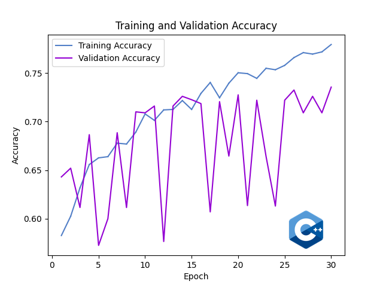 | 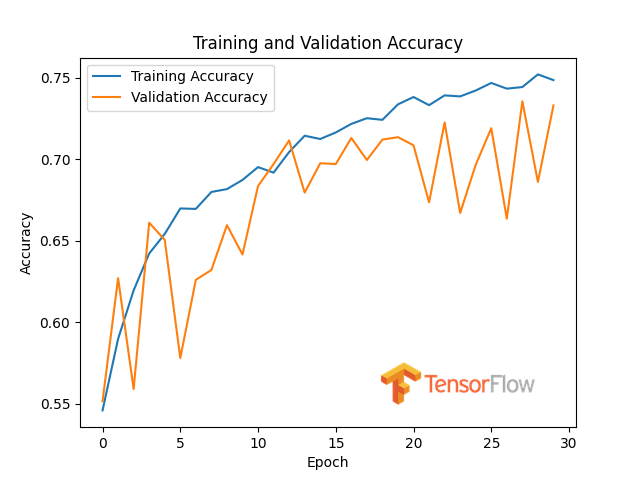 |
| 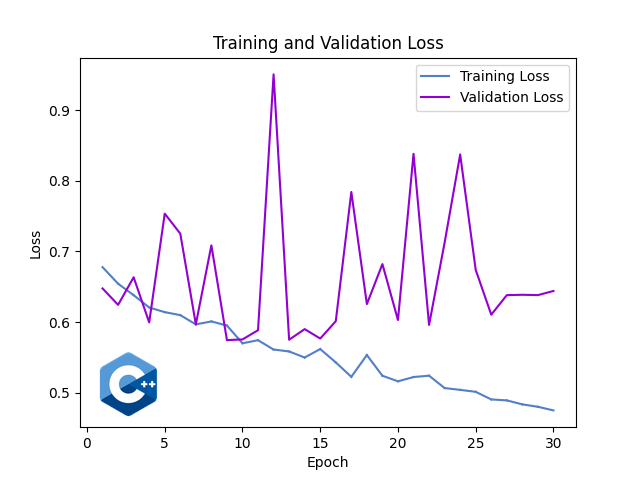 | 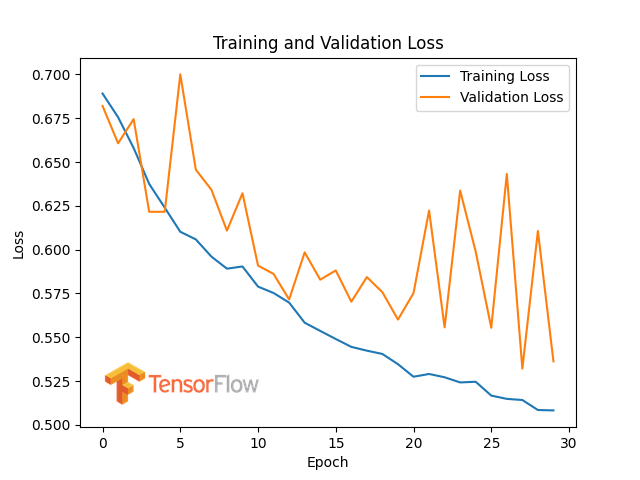 |
| Prediction for "dog.jpg" is "dog" with confidence 99.9252%. ✅ | Prediction for "dog.jpg" is "dog" with confidence 98.59%. ✅ |
| Prediction for "cat.jpg" is "cat" with confidence 98.1948%. ✅ | Prediction for "cat.jpg" is "cat" with confidence 87.65%. ✅ |
| Model Component | CNN-CPP Description | TensorFlow Description |
|---|---|---|
| Model Implementation | wmodels/cnn_cd_ld_e25.hpp | tfmodels/cnn_cd_ld_e25.py |
| Input Image Size | 32x32 pixels | 32x32 pixels |
| Convolutional Layer 1 | 32 filters, 3x3 kernel, ReLU activation | 32 filters, 3x3 kernel, ReLU activation |
| MaxPooling Layer 1 | 2x2 pool size | 2x2 pool size |
| Convolutional Layer 2 | 32 filters, 3x3 kernel, ReLU activation | 32 filters, 3x3 kernel, ReLU activation |
| MaxPooling Layer 2 | 2x2 pool size | 2x2 pool size |
| Flatten Layer | Converts 4D Tensor to 4D Tensor(2D) | Converts 2D matrices to 1D vector |
| Fully Connected Layer 1 | 128 units, ReLU activation | 128 units, ReLU activation |
| Fully Connected Layer 2 | 64 units, ReLU activation | 64 units, ReLU activation |
| Fully Connected Layer 3 | 32 units, ReLU activation | 32 units, ReLU activation |
| Output Layer | 1-unit Dense layer with Sigmoid | 1-unit Dense layer with Sigmoid |
| Loss Function | Binary Cross-Entropy | Binary Cross-Entropy |
| Optimizer | Adam with gradient clipping (clipvalue=1.0) | Adam with gradient clipping (clipvalue=1.0) |
| Learning Rate | 0.0001 (Polynomial Decay) | 0.0001 (Polynomial Decay) |
| Polynomial Decay Params | End LR: 0.00001, Decay Steps: 25, Power: 2.0 | End LR: 0.00001, Decay Steps: 25, Power: 2.0 |
| Batch Size | 32 | 32 |
| Epochs | 25 | 25 |
| Batch Mode | Uniform Distribution | Flow From Directory |
| Augmentation | Zoom (0.2), Shear (0.2), Horizontal Flip (50%) | Zoom (0.2), Shear (0.2), Horizontal Flip (50%) |
The model is trained and validated on a dataset containing images of cats and dogs:
- Training Data: 4,000 images of dogs and 4,000 images of cats.
- Validation Data: 1,000 images of dogs and 1,000 images of cats.
- Single Prediction Data: 1 dog image and 1 cat image for single prediction tasks.
| CNN-CPP | TensorFlow |
|---|---|
| 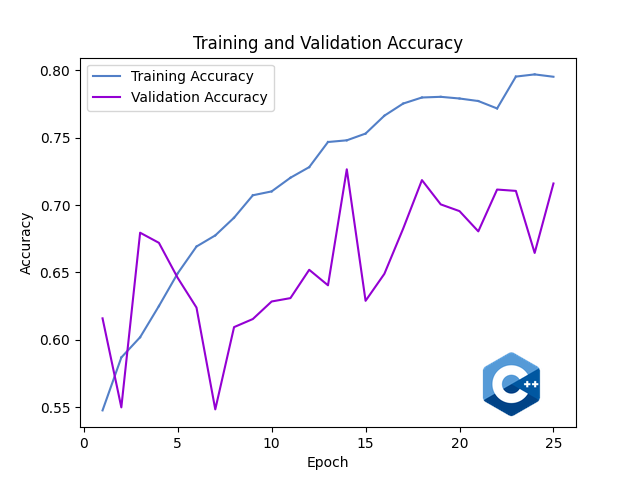 | 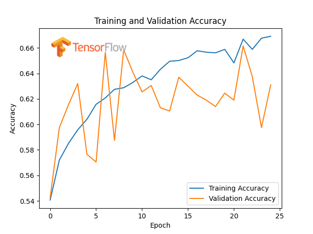 |
| 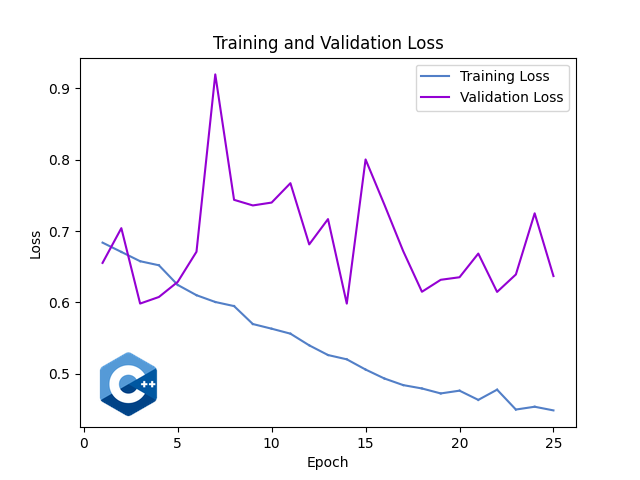 | 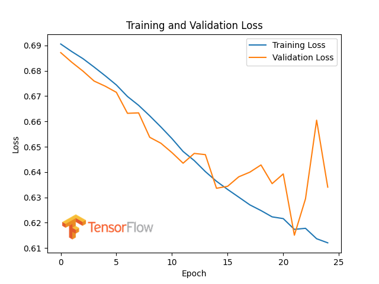 |
| Prediction for "dog.jpg" is "dog" with confidence 99.1866%. ✅ | Prediction for dog.jpg is "dog" with confidence: 78.54%. ✅ |
| Prediction for "cat.jpg" is "cat" with confidence 75.9565%. ✅ | Prediction for cat.jpg is "cat" with confidence: 54.99%. ✅ |
| Model Component | CNN-CPP Description | TensorFlow Description |
|---|---|---|
| Model Implementation | wmodels/cnn_cd_nb_e25.hpp | tfmodels/cnn_cd_nb_e25.py |
| Input Image Size | 32x32 pixels | 32x32 pixels |
| Convolutional Layer 1 | 32 filters, 3x3 kernel, ReLU | 32 filters, 3x3 kernel, ReLU |
| Batch Normalization 1 | Applied after Conv Layer 1 | Applied after Conv Layer 1 |
| MaxPooling Layer 1 | 2x2 pool size | 2x2 pool size |
| Convolutional Layer 2 | 32 filters, 3x3 kernel, ReLU | 32 filters, 3x3 kernel, ReLU |
| Batch Normalization 2 | Applied after Conv Layer 2 | Applied after Conv Layer 2 |
| MaxPooling Layer 2 | 2x2 pool size | 2x2 pool size |
| Flatten Layer | Converts 4D Tensor to 4D Tensor(2D) | Converts 2D matrices to 1D vector |
| Fully Connected Layer 1 | 128 units, ReLU | 128 units, ReLU |
| Batch Normalization 3 | Applied after Fully Connected Layer 1 | Applied after Fully Connected Layer 1 |
| Fully Connected Layer 2 | 64 units, ReLU | 64 units, ReLU |
| Batch Normalization 4 | Applied after Fully Connected Layer 2 | Applied after Fully Connected Layer 2 |
| Fully Connected Layer 3 | 32 units, ReLU | 32 units, ReLU |
| Batch Normalization 5 | Applied after Fully Connected Layer 3 | Applied after Fully Connected Layer 3 |
| Output Layer | 1-unit Dense layer with Sigmoid | 1-unit Dense layer with Sigmoid |
| Loss Function | Binary Cross-Entropy | Binary Cross-Entropy |
| Optimizer | Adam with gradient clipping (clipvalue=1.0) | Adam with gradient clipping (clipvalue=1.0) |
| Learning Rate | 0.0001 | 0.0001 |
| Batch Size | 32 | 32 |
| Epochs | 25 | 25 |
| Batch Mode | Uniform Distribution | Flow From Directory |
| Augmentation | Zoom (0.2), Shear (0.2), Horizontal Flip (50%) | Zoom (0.2), Shear (0.2), Horizontal Flip (50%) |
The model is trained and validated on a dataset containing images of cats and dogs:
- Training Data: 4,000 images of dogs and 4,000 images of cats.
- Validation Data: 1,000 images of dogs and 1,000 images of cats.
- Single Prediction Data: 1 dog image and 1 cat image for single prediction tasks.
| CNN-CPP | TensorFlow |
|---|---|
| 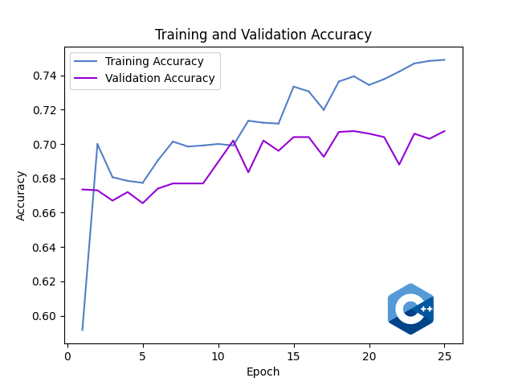 | 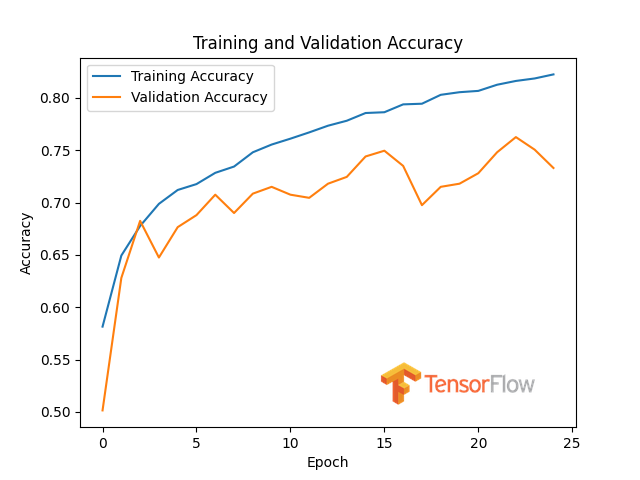 |
| 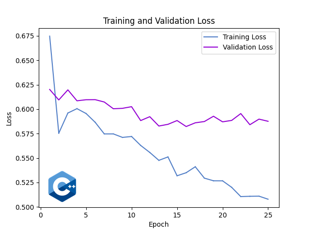 | 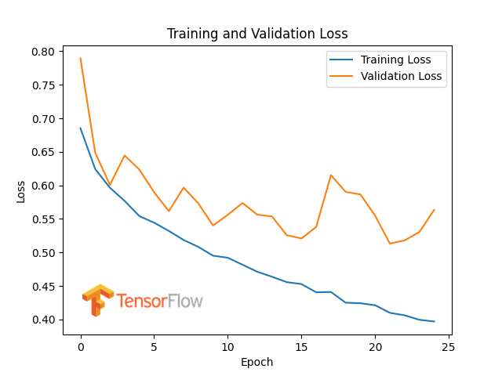 |
| Prediction for "dog.jpg" is "dog" with confidence 97.6306%. ✅ | Prediction for dog.jpg is "dog" with confidence: 99.88%. ✅ |
| Prediction for "cat.jpg" is "cat" with confidence 89.2549%. ✅ | Prediction for cat.jpg is "cat" with confidence: 85.96%. ✅ |
| Model Component | CNN-CPP Description | TensorFlow Description |
|---|---|---|
| Model Implementation | wmodels/cnn_mnist_e3.hpp | tfmodels/cnn_mnist_e3.py |
| Input Image Size | 28x28 pixels | 28x28 pixels |
| Convolutional Layer 1 | 32 filters, 3x3 kernel, ReLU | 32 filters, 3x3 kernel, ReLU |
| Batch Normalization 1 | Applied after Conv Layer 1 | Applied after Conv Layer 1 |
| MaxPooling Layer 1 | 2x2 pool size | 2x2 pool size |
| Convolutional Layer 2 | 64 filters, 3x3 kernel, ReLU | 64 filters, 3x3 kernel, ReLU |
| Batch Normalization 2 | Applied after Conv Layer 2 | Applied after Conv Layer 2 |
| MaxPooling Layer 2 | 2x2 pool size | 2x2 pool size |
| Flatten Layer | Converts 4D Tensor to 4D Tensor(2D) | Converts 2D matrices to 1D vector |
| Fully Connected Layer 1 | 128 units, ReLU | 128 units, ReLU |
| Batch Normalization 3 | Applied after Fully Connected Layer 1 | Applied after Fully Connected Layer 1 |
| Fully Connected Layer 2 | 10 units, Softmax activation | 10 units, Softmax activation |
| Loss Function | Categorical Cross-Entropy | Categorical Cross-Entropy |
| Optimizer | Adam with gradient clipping (clipvalue=1.0) | Adam with gradient clipping (clipvalue=1.0) |
| Learning Rate | 0.00005 | 0.00005 |
| Batch Size | 80 | 80 |
| Epochs | 3 | 3 |
| Batch Mode | Shuffle Only | Flow From Directory |
| Augmentation | None | None |
The model is trained and validated on the MNIST dataset, which contains grayscale images of handwritten digits (0-9):
- Training Data: 60,000 images of digits (0-9).
- Validation Data: 10,000 images of digits (0-9).
- Single Prediction Data: One image per digit (0-9) taken from the validation set for single predictions.
| CNN-CPP | TensorFlow |
|---|---|
| 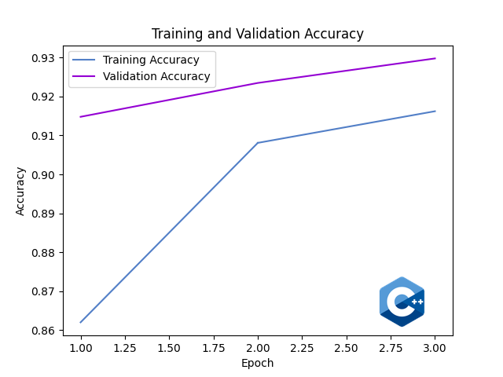 | 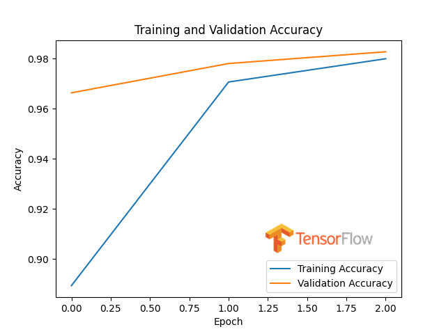 |
| 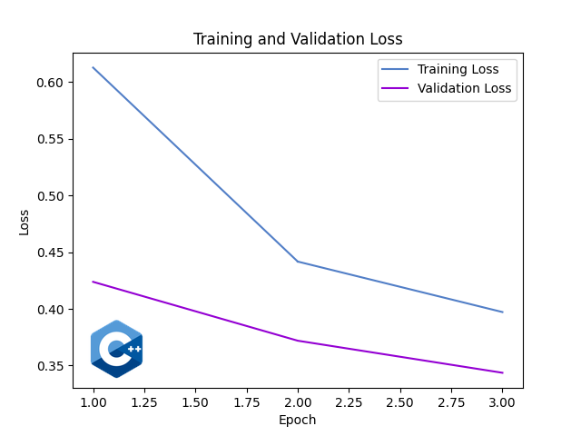 | 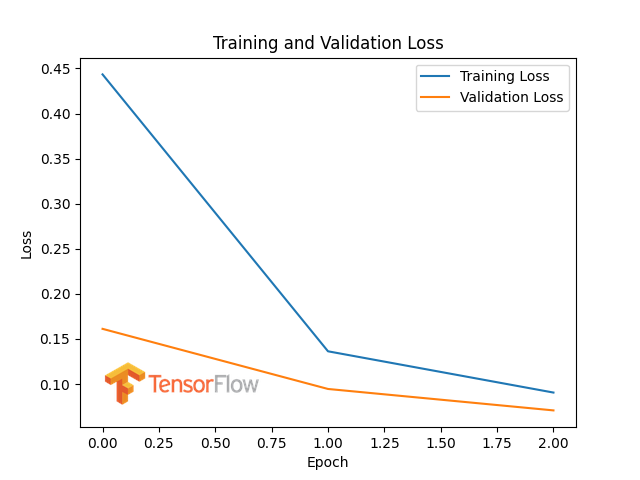 |
| Prediction for "category_0.png" is "category_0" with confidence 77.6742%. ✅ | Prediction for category_0.png is "category_0" with confidence: 99.24%. ✅ |
| Prediction for "category_1.png" is "category_1" with confidence 90.0234%. ✅ | Prediction for category_1.png is "category_1" with confidence: 99.64%. ✅ |
| Prediction for "category_2.png" is "category_2" with confidence 87.8634%. ✅ | Prediction for category_2.png is "category_2" with confidence: 98.85%. ✅ |
| Prediction for "category_3.png" is "category_3" with confidence 97.0475%. ✅ | Prediction for category_3.png is "category_3" with confidence: 99.94%. ✅ |
| Prediction for "category_4.png" is "category_4" with confidence 84.2373%. ✅ | Prediction for category_4.png is "category_4" with confidence: 99.95%. ✅ |
| Prediction for "category_5.png" is "category_5" with confidence 96.0565%. ✅ | Prediction for category_5.png is "category_5" with confidence: 99.93%. ✅ |
| Prediction for "category_6.png" is "category_6" with confidence 89.9181%. ✅ | Prediction for category_6.png is "category_6" with confidence: 99.83%. ✅ |
| Prediction for "category_7.png" is "category_7" with confidence 94.8519%. ✅ | Prediction for category_7.png is "category_7" with confidence: 99.49%. ✅ |
| Prediction for "category_8.png" is "category_8" with confidence 74.2565%. ✅ | Prediction for category_8.png is "category_8" with confidence: 99.87%. ✅ |
| Prediction for "category_9.png" is "category_9" with confidence 84.3253%. ✅ | Prediction for category_9.png is "category_9" with confidence: 99.72%. ✅ |
| Model Component | CNN-CPP Description | TensorFlow Description |
|---|---|---|
| Model Implementation | wmodels/cnn_cifar10_e10.hpp | tfmodels/cnn_cifar10_e10.py |
| Input Image Size | 32x32 pixels | 32x32 pixels |
| Convolutional Layer 1 | 32 filters, 3x3 kernel, ReLU | 32 filters, 3x3 kernel, ReLU |
| MaxPooling Layer 1 | 2x2 pool size | 2x2 pool size |
| Convolutional Layer 2 | 64 filters, 3x3 kernel, ReLU | 64 filters, 3x3 kernel, ReLU |
| MaxPooling Layer 2 | 2x2 pool size | 2x2 pool size |
| Convolutional Layer 3 | 64 filters, 3x3 kernel, ReLU | 64 filters, 3x3 kernel, ReLU |
| MaxPooling Layer 3 | 2x2 pool size | 2x2 pool size |
| Flatten Layer | Converts 4D Tensor to 4D Tensor(2D) | Converts 2D matrices to 1D vector |
| Fully Connected Layer 1 | 128 units, ReLU | 128 units, ReLU |
| Fully Connected Layer 2 | 10 units, Softmax activation | 10 units, Softmax activation |
| Loss Function | Categorical Cross-Entropy | Categorical Cross-Entropy |
| Optimizer | Adam with gradient clipping (clipvalue=1.0) | Adam with gradient clipping (clipvalue=1.0) |
| Learning Rate | 0.0005 (Step Decay) | 0.0005 (Step Decay) |
| Step Decay Params | Step Size: 1, Decay Factor: 0.7 | Step Size: 1, Decay Factor: 0.7 |
| Batch Size | 80 | 80 |
| Epochs | 10 | 10 |
| Batch Mode | Shuffle Only | Flow From Directory |
| Augmentation | None | None |
The model is trained and validated on the CIFAR-10 dataset, which contains 60,000 32x32 color images in 10 different classes:
- Training Data: 50,000 images of 10 classes.
- Validation Data: 10,000 images of 10 classes.
- Single Prediction Data: 10 images, one per class, downloaded from Google Images for single predictions.
| CNN-CPP | TensorFlow |
|---|---|
| 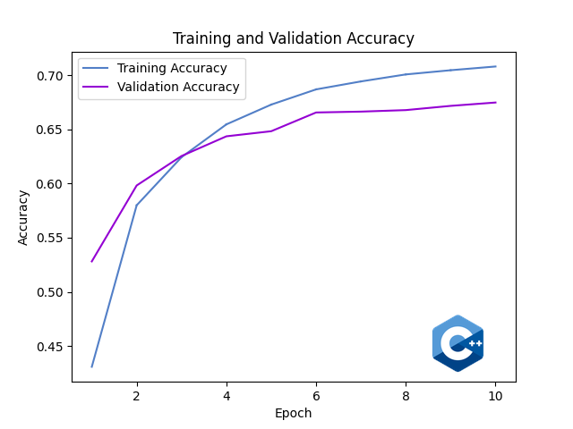 | 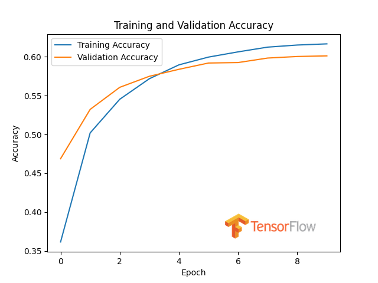 |
| 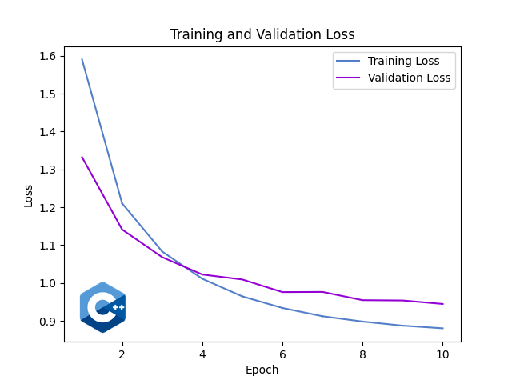 | 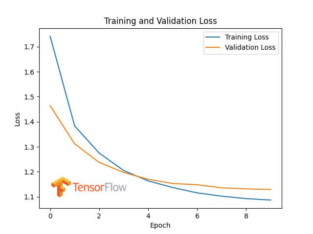 |
| Prediction for "cat.jpg" is "cat" with confidence 42.5325%. ✅ | Prediction for cat.jpg is "cat" with confidence: 21.22%. ✅ |
| Prediction for "dog.jpg" is "dog" with confidence 87.6412%. ✅ | Prediction for dog.jpg is "dog" with confidence: 66.92%. ✅ |
| Prediction for "frog.jpg" is "frog" with confidence 91.7512%. ✅ | Prediction for frog.jpg is "frog" with confidence: 98.60%. ✅ |
| Prediction for "deer.jpg" is "deer" with confidence 94.8323%. ✅ | Prediction for deer.jpg is "frog" with confidence: 76.39%. ❌ |
| Prediction for "bird.jpg" is "bird" with confidence 94.2929%. ✅ | Prediction for bird.jpg is "bird" with confidence: 56.94%. ✅ |
| Prediction for "ship.jpg" is "ship" with confidence 99.3474%. ✅ | Prediction for ship.jpg is "ship" with confidence: 96.62%. ✅ |
| Prediction for "horse.jpg" is "horse" with confidence 77.5294%. ✅ | Prediction for horse.jpg is "horse" with confidence: 83.91%. ✅ |
| Prediction for "truck.jpg" is "truck" with confidence 89.7804%. ✅ | Prediction for truck.jpg is "truck" with confidence: 90.47%. ✅ |
| Prediction for "airplane.jpg" is "airplane" with confidence 99.8279%. ✅ | Prediction for airplane.jpg is "airplane" with confidence: 70.14%. ✅ |
| Prediction for "automobile.jpg" is "automobile" with confidence 98.7025%. ✅ | Prediction for automobile.jpg is "automobile" with confidence: 95.32%. ✅ |
| Model Component | CNN-CPP ELRALES | CNN-CPP ELRALES Early Stopping |
|---|---|---|
| Model Implementation | wmodels/cnn_cd_elrales_e25.hpp | wmodels/cnn_cd_elrales_e25.hpp |
| Input Image Size | 32x32 pixels | 32x32 pixels |
| Convolutional Layer 1 | 32 filters, 3x3 kernel, ReLU activation | 32 filters, 3x3 kernel, ReLU activation |
| MaxPooling Layer 1 | 2x2 pool size | 2x2 pool size |
| Convolutional Layer 2 | 32 filters, 3x3 kernel, ReLU activation | 32 filters, 3x3 kernel, ReLU activation |
| MaxPooling Layer 2 | 2x2 pool size | 2x2 pool size |
| Flatten Layer | Converts 4D Tensor to 4D Tensor(2D) | Converts 4D Tensor to 4D Tensor(2D) |
| Fully Connected Layer 1 | 128 units, ReLU activation | 128 units, ReLU activation |
| Fully Connected Layer 2 | 64 units, ReLU activation | 64 units, ReLU activation |
| Fully Connected Layer 3 | 32 units, ReLU activation | 32 units, ReLU activation |
| Output Layer | 1-unit Dense layer with Sigmoid | 1-unit Dense layer with Sigmoid |
| Loss Function | Binary Cross-Entropy | Binary Cross-Entropy |
| Optimizer | Adam with gradient clipping (clipvalue=1.0) | Adam with gradient clipping (clipvalue=1.0) |
| Learning Rate | 0.0001 (ELRALES) | 0.0001 (ELRALES) |
| ELRALES Params | LRC: 0.8, MSF: 3, MF: 20, TOL: 0.01 | LRC: 0.5, MSF: 3, MF: 20, TOL: 0 |
| Batch Size | 32 | 32 |
| Epochs | 25 | 25 |
| Batch Mode | Uniform Distribution | Uniform Distribution |
| Augmentation | Zoom (0.2), Shear (0.2), Horizontal Flip (50%) | Zoom (0.2), Shear (0.2), Horizontal Flip (50%) |
The model is trained and validated on a dataset containing images of cats and dogs:
- Training Data: 4,000 images of dogs and 4,000 images of cats.
- Validation Data: 1,000 images of dogs and 1,000 images of cats.
- Single Prediction Data: 1 dog image and 1 cat image for single prediction tasks.
| ELRALES | ELRALES Early Stopping |
|---|---|
| 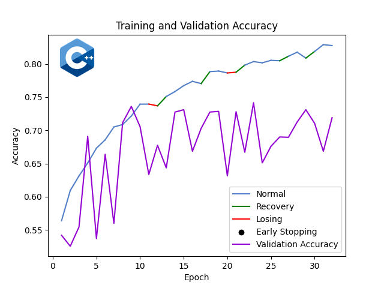 | 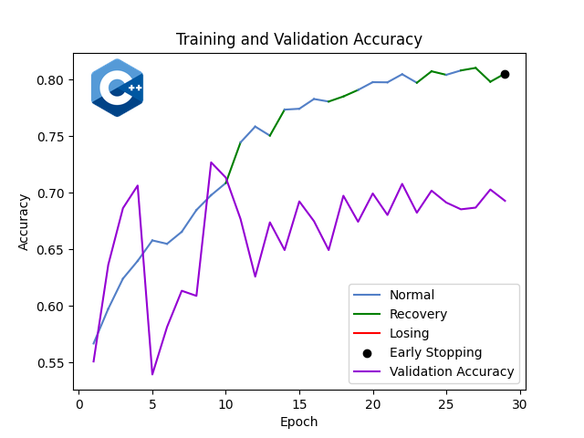 |
| 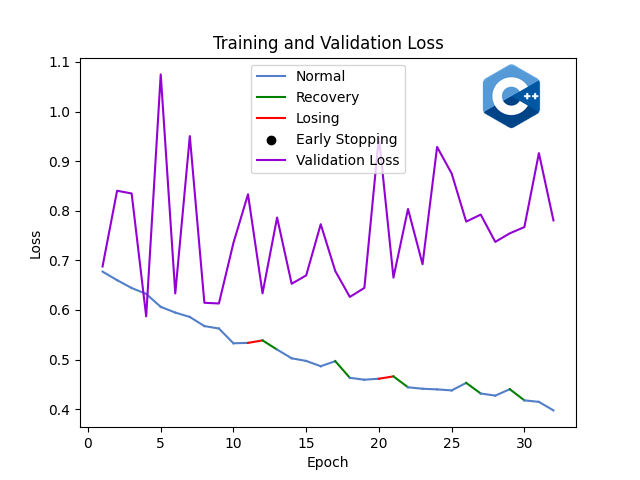 | 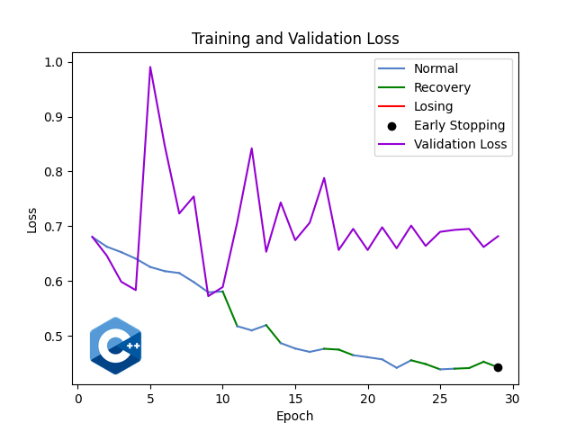 |
| Prediction for "dog.jpg" is "dog" with confidence 99.9968%. ✅ | Prediction for "dog.jpg" is "dog" with confidence 99.9958%. ✅ |
| Prediction for "cat.jpg" is "cat" with confidence 91.7796%. ✅ | Prediction for "cat.jpg" is "cat" with confidence 95.6531%. ✅ |
This project is licensed under the MIT License. For more details, please see the LICENSE file.